A Seminar at Freie Universität Berlin
Egyptian Writing Through Time
Egyptian manuscripts from the Old Kingdom to the Roman Period.
About
Course Description
Over sixteen weeks, we will read Egyptian manuscripts spanning four thousand years, from the earliest experiments with writing to Demotic narrative literature. This is a reading course in the philological tradition: each week centers on one text, prepared at home and read together in class. No prior knowledge of Egyptian is required. Every manuscript comes as a packet containing a facsimile, a hieroglyphic transcription, a transliteration, and a translation, so that every student can work directly with the original document regardless of language training.
We will also reproduce the manuscripts we read. Using authentic materials (papyrus, reed pens, carbon ink, potsherds, and stone), we will copy each week’s text and learn paleography through production as well as observation. As we write, we will also measure. The course integrates an active research program on the evolution of writing systems, which treats sign shapes as data and the history of Egyptian writing as a natural experiment in efficient communication. The scriptorium doubles as training: handwriting experiments need writers who know ancient scripts and materials, and students who consent may contribute their own handwriting to the project as data. By the end of the semester, the class will have produced a small archive of handmade manuscripts and a dataset for the study of script evolution.
Schedule
Class 1 · October 15
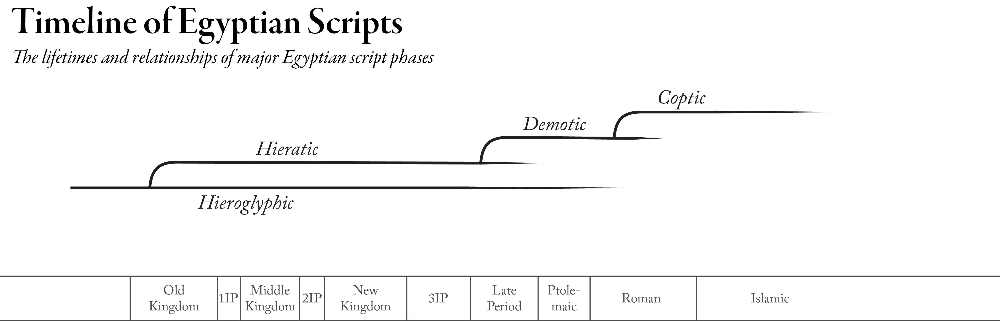
Four Thousand Years of Script Evolution
How this course works. The Egyptian scripts and languages in overview, and the five forces on a sign: material, physical, evolutionary, cognitive, and cultural. The scribal toolkit, and first marks on papyrus and potshard.
Class 2 · October 22
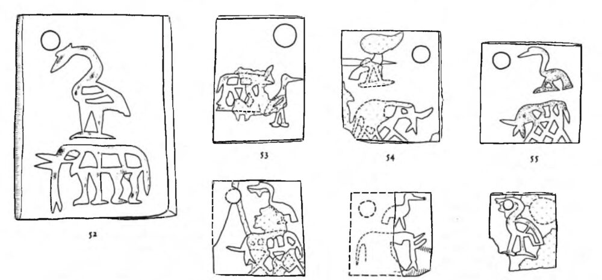
The First Writing
The U-j tags and the debate over their interpretation. The coevolution of hieroglyphic and cursive, and how Egyptian writing works: phonograms, logograms, and determinatives.
Class 3 · October 29
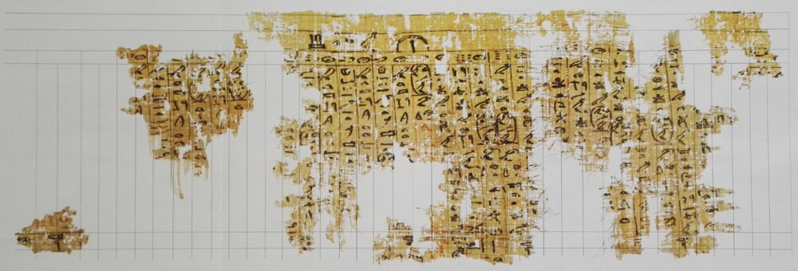
The Old Kingdom: Wadi el-Jarf
Read Merer. Old Egyptian and the earliest hieratic, and administrative documents as a genre. The Wadi el-Jarf papyri as objects.
Class 4 · November 5
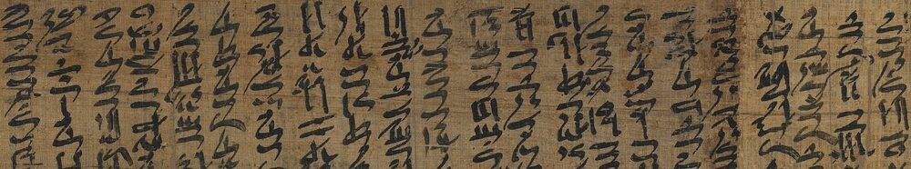
The Eloquent Peasant
Middle Egyptian, the classical stage of the language. The Middle Kingdom literary book hand, read from high-resolution photographs.
Class 5 · November 12
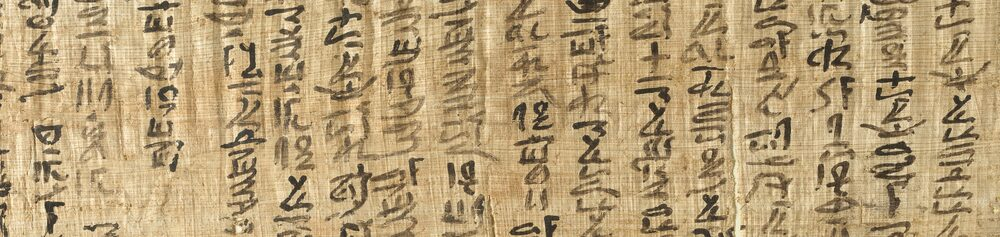
Heqanakht
Read Heqanakht. Letters as a genre and the documentary hand. Cursive economy: which signs simplify first?
Class 6 · November 19
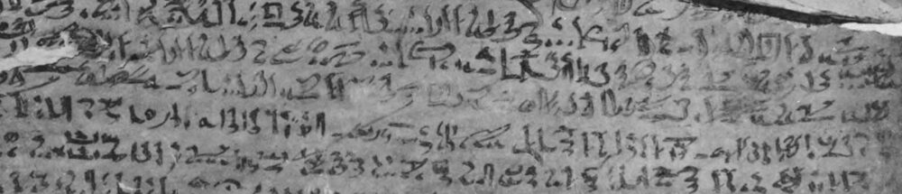
The Carnarvon Tablet and the Kamose Stela
The Kamose Stela, and the relationship between hieroglyphic and hieratic. Write a passage in hieratic, then transcribe it into hieroglyphs.
Class 7 · November 26
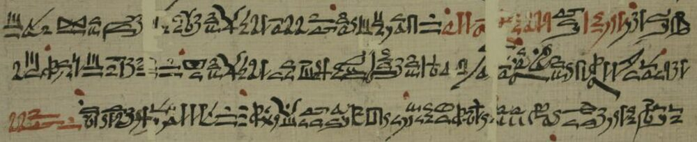
Satire on the Trades and Kemyt
Scribal education, with school papyri and ostraca. Kemyt’s archaizing hand and vertical columns against the Ramesside hand that copies it.
Class 8 · December 3
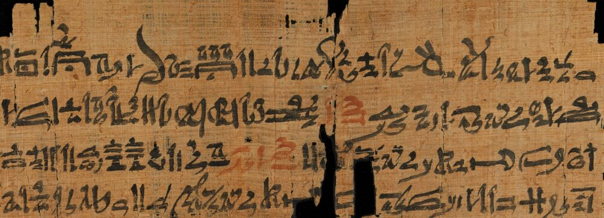
New Kingdom Stories: Horus and Seth
Read Horus and Seth. Late Egyptian and the written vernacular, and the Ramesside literary hand beside its Middle Kingdom ancestor.
Class 9 · December 10
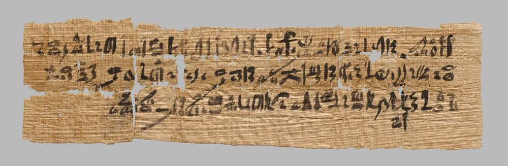
Genre and Register
Sign complexity and genre, and comparing genres and registers.
Class 10 · December 17
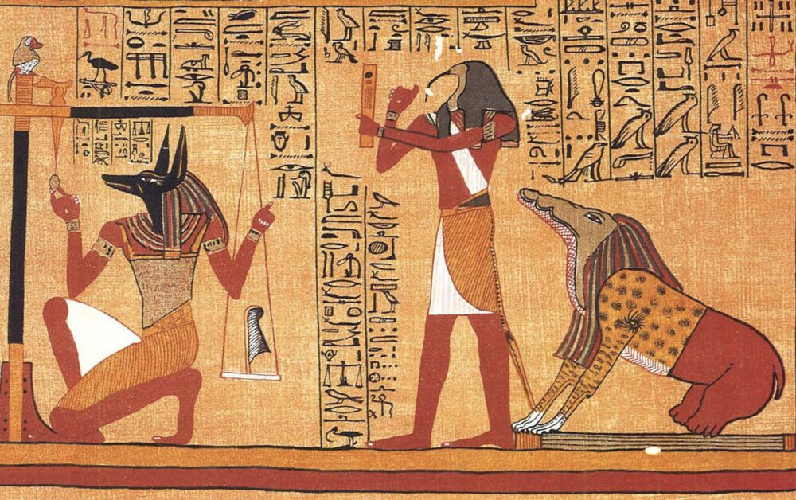
The Book of the Dead of Ani
What does it mean to say that the cursive hieroglyphs in Ani are ‘drawn’ not ‘written’? Retrograde writing and page layout.
Class 11 · January 7
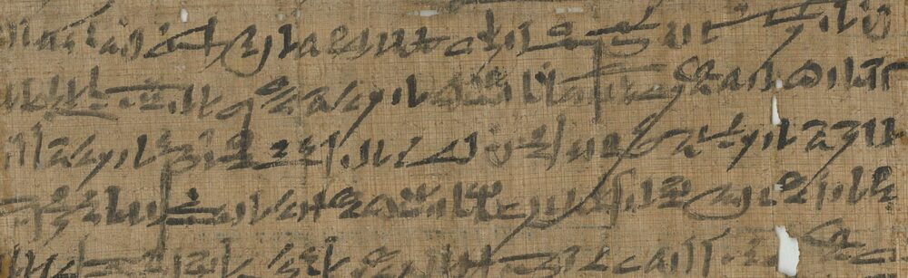
The Late Ramesside Letters
Read LRL 4. The late Ramesside documentary hand, and Amun as king. Theology and politics after the New Kingdom.
Class 12 · January 14
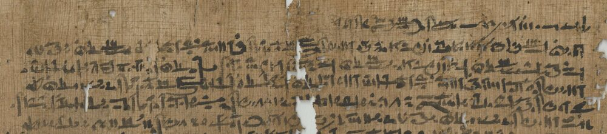
The Beginnings of Demotic
Read Meryre. Northern and southern documentary hands, why Demotic prevailed, and why transformations accelerate in unstable times.
Class 13 · January 21
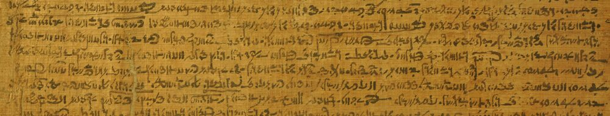
Setne I
Read Setne. The Demotic writing system up close. What did scribes remember, and how much iconicity remains in a script like this?
Class 14 · January 28
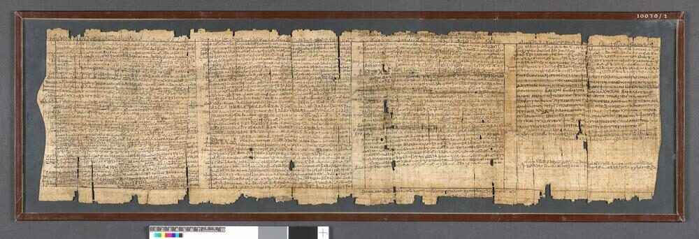
The Demotic Magical Papyri
Read the magical spells. Demotic, Old Coptic glosses, Greek, and a cipher.
Class 15 · February 4
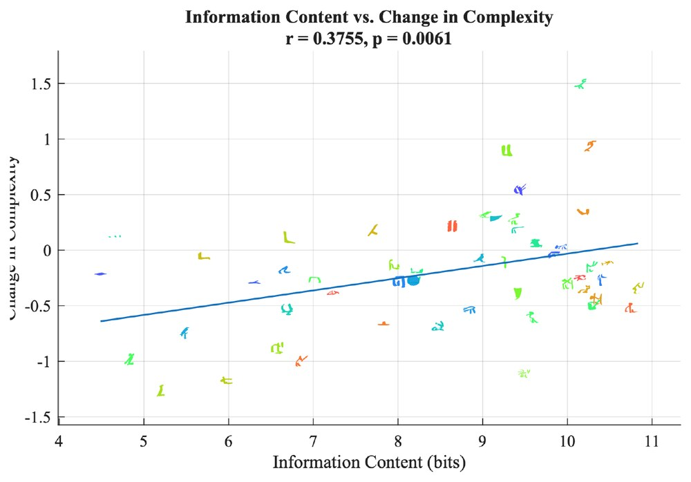
Lab and Synthesis: Writing Systems Evolve
Information theory for paleographers: frequency, surprise, and production cost. The five forces in review.
Class 16 · February 11
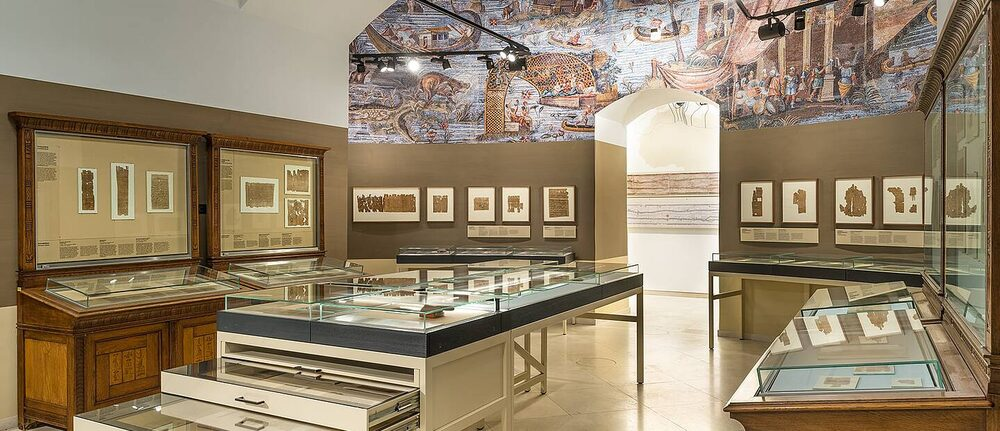
The Scriptorium Exhibition
Each student presents a manuscript reproduction and commentary. A gallery walk through the class archive.
Scriptorium
The class archive
Most classes include time in the scriptorium, in which students reproduce a passage of the week’s manuscript with period materials. Reproductions are photographed into each student’s portfolio and, with consent, digitized as data for the course’s research component. Photographs will be collected here across the semester. [Placeholder: portfolio gallery.]
Contact
Questions
Dr. Christian Casey · christian.casey@fu-berlin.de
Office hours: Wednesdays 14:00–16:00, Holzlaube, Room -1.0053